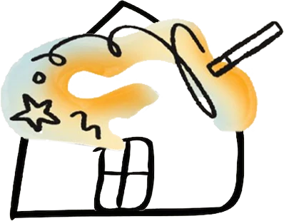

Valeurs : le soleil (B) est retenu et déjà intégré à la maquette. Pour Mission et Services, voici trois variations de vos illustrations actuelles. Dites-moi la lettre que vous préférez.
Mission · la comète
ActuellePour comparerA · La comète, plus netteMême élan, traits plus lisibles en petitB · La comète étincelleLa tête reprend l’étincelle du logoC · La comète qui monteUne trajectoire vers le haut, une petite planète
Valeurs · retenue
B · Le soleil tranquilleIntégré à la maquette
Services · la maison

ActuellePour comparerA · Éponge et bullesMême maison, l’outil devient une épongeB · Aux couleurs de la charteMême dessin, aquarelle vert, pervenche et jauneC · Le cœur et le pinceauL’original, avec un cœur dans la tache